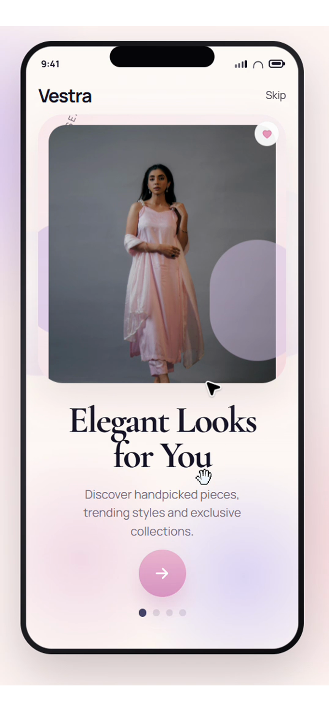

ONDESIGN · AI UI DESIGN WORKFLOW
DESIGN DNAFOR AI CODING


不是让 AI 猜，而是给它一套能复用的视觉依据。

APP DESIGN · MOBILEFashion Shopping App从真实移动端页面里找布局、层级和组件参考。
IMAGE2 TO UI
从一个 Idea 到一个 Demo，你需要经历这 4 步。
滚动不是为了炫技，而是让这四个动作按正确顺序被理解。
- 01DEFINE
- 02CREATE
- 03BUILD
- 04ITERATE
 01 · DEFINE
01 · DEFINE 02 · CREATE
02 · CREATEDESIGN DNA
不是多做几张图，而是先把规则定清楚。
字体、颜色、间距和组件状态都明确以后，AI 才有可能持续做出同一种设计语言。
Typography
标题、正文、字重、行高先统一。
Color
主色、表面、状态色都有固定角色。
Spacing
间距不靠感觉，统一到同一套 scale。
Components
Default、Hover、Active、Disabled 都要有规则。
ondesign / workspace⌘K
DESIGN WORKSPACE
同一套规则，继续长出更多页面。
参考、组件和 Token 放在一起。改一处，后面的页面都有依据。
Search interface…PrimarySecondary Enabled